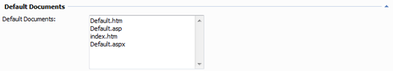
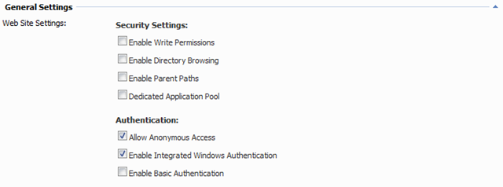
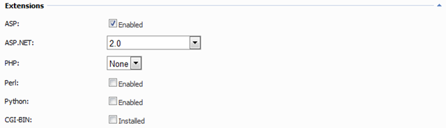
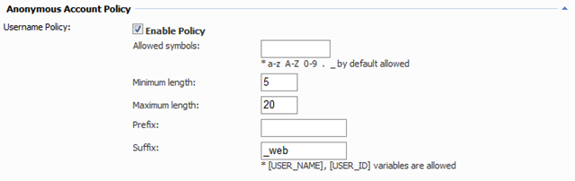
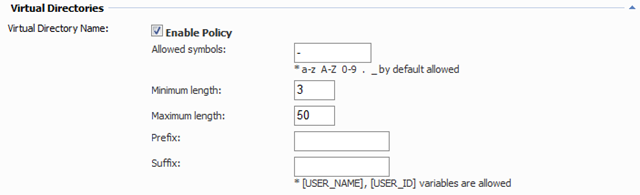
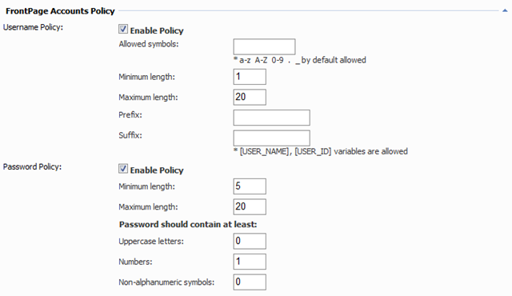
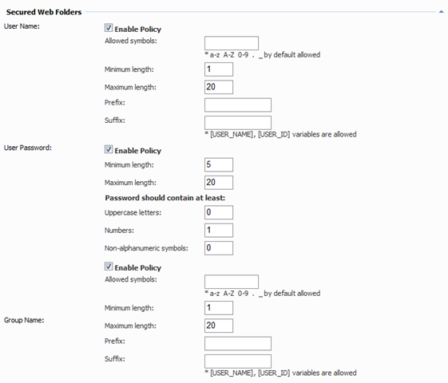
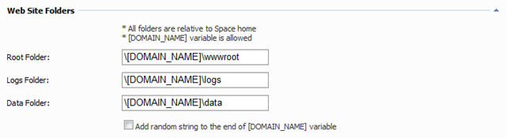

Web Policy
Parking Page
See this article.
Default Documents

Allows to specify the list of default documents for new web site. Documents coming first in the list have higher priority.
General Settings

Allows to specify general security and authentication settings for new web sites.
Extensions

Allows to specify what scripting extensions (and which versions) are enabled by default for all new web sites.
Anonymous Account Policy

Allows to set username policy for web site anonymous account.
Virtual Directories

Allow to set policy for virtual directory names.
FrontPage Account Policy

Allows to set policies for FrontPage account username and password.
Secured Web Folders

Allows to set policies for secured folder (based on IISPassword) user accounts, passwords and group names.
Web Site Folders

Allows to specify relative locations of "root", "logs" and "data" folders of web site.
- Root Folder - the folder where all web site files are stored
- Logs Folder - the folder where raw web site logs are stored
- Data Folder - is the place where web site working files such as .XML, .MDB, etc. can be placed and that are required write permissions. It is recommended to make this folder above "Root Folder" to prevent access its contents via browser.
- Add random string to the end of [DOMAIN_NAME] variable - if enabled a crypto-strong random string will be added to the end of [DOMAIN_NAME] variable preventing attacker from guessing web site folders by domain name. It's quite effective security solution if you place all web site in the same shared application pool.